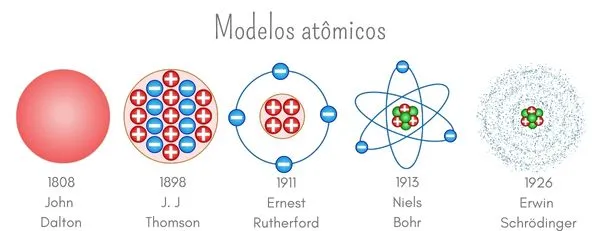

Os modelos atômicos são teorias que tentam explicar a matéria e seus fenômenos. Eles foram evoluindo com o tempo, de acordo com os avanços da ciência.
Os modelos atômicos são teorias desenvolvidas por cientistas que tentam explicar o funcionamento da matéria e de seus fenômenos. Todas elas se baseiam na existência de uma partícula fundamental, o átomo. A interpretação do átomo vai evoluindo a cada modelo atômico, de acordo com os conhecimentos científicos da época. Os modelos atômicos desenvolvidos foram: modelo atômico de Dalton, modelo atômico de Thomson, modelo atômico de Rutherford, modelo atômico de Bohr e modelo atômico de Schrödinger.
- Os modelos atômicos são teorias criadas para explicar a composição e o funcionamento da
matéria.
- Foram evoluindo em paralelo com o avanço da ciência.
- O primeiro modelo atômico foi proposto por Dalton, em 1808, que afirmava que o átomo é uma
esfera maciça indivisível e indestrutível.
- Em 1887, Thomson atualizou o modelo atômico afirmando a existência de carga
elétrica.
- Mais tarde, em 1911, Rutherford determinou que o átomo é formado por duas regiões: o
núcleo
e a eletrosfera.
- Niels Bohr propôs a existência de camadas eletrônicas na eletrosfera para resolver
limitações físicas no modelo de Rutherford, no modelo que ficou conhecido como modelo de
Rutherford-Bohr.
- Em 1926, Erwin Schrödinger determinou a existência de orbitais, que são regiões com
diferente probabilidade de se encontrar o elétron.
Video aula sobre modelos atômicos
- Modelo atômico de Dalton (modelo bola de bilhar) — 1808.
- Modelo atômico de Thomson (modelo pudim de passas) — 1898.
- Modelo atômico de Rutherford (modelo planetário) — 1911.
- Modelo atômico de Bohr (modelo Rutherford-Bohr) — 1913.
- Modelo atômico de Schrödinger (modelo mais aceito atualmente) — 1926.
O modelo atômico de Dalton foi a primeira teoria proposta para tentar
explicar a construção
da matéria e foi desenvolvida por John Dalton em 1808.
Esse modelo supõe que o átomo é uma esfera maciça, homogênea, indivisível e
indestrutível e,
por isso, é também conhecido como modelo da “bola de bilhar”.
Dalton determinou alguns princípios que explicavam a matéria e seus
fenômenos, baseado na
ideia de que o átomo é uma esfera indivisível:
- A matéria é formada por pequenas partículas que não se dividem, os átomos.
- Os átomos de um mesmo elemento químico são idênticos.
- Os átomos de elementos químicos diferentes possuem propriedades físicas e químicas
distintas.
- Átomos não são criados ou destruídos.
- Um elemento é definido pelo peso do seu átomo.
- Ao formar substâncias, os átomos não se alteram.
- Uma reação química ocorre mediante a simples reorganização dos átomos, os
quais mantêm a sua
identidade.
Atualmente, se conserva a maioria desses princípios, com exceção de que o átomo é maciço e
indivisível e que os elementos são definidos pelo seu peso (na realidade, é pelo seu
número
atômico).
Interessante: Antes de Dalton propor a primeira teoria atômica, o
homem já se questionava
sobre a composição da matéria. No século V a.C., na Grécia Antiga, os
filósofos Demócrito e
Leucipo utilizaram pela primeira vez o termo átomo para se referir às
partículas pequenas,
indivisíveis e indestrutíveis, que eles acreditavam ser a unidade constituinte da matéria.
O modelo atômico proposto por Joseph John Thomson, em 1898, afirma
que o átomo possui
natureza elétrica, é divisível e formado por partículas subatômicas.
Thomson descobriu a existência de partículas carregadas negativamente
(elétrons) no átomo,
derrubando o conceito de Dalton, que afirmava que o átomo seria indivisível.
Por meio de experimentos, Thomson construiu uma nova teoria atômica, na qual
defendeu a
existência de cargas elétricas negativas presas a um núcleo, com carga elétrica
positiva.
Devido a essa estrutura, esse modelo atômico é conhecido como modelo do “pudim de passas”.
As considerações do modelo atômico de Thomson são:
- O átomo é esférico e divisível.
- O átomo é eletricamente neutro, possuindo a mesma quantidade de partículas negativas e
positivas.
- Os elétrons não estão presos no núcleo positivo, podendo ser transferidos a outros átomos,
em determinadas condições.
- As cargas elétricas negativas estão uniformemente distribuídas ao redor do núcleo
positivo,
por repulsão eletrostática.
Ernest Rutherford propôs um novo modelo atômico em 1911, no qual afirma que
o átomo é
formado por uma região central de massa elevada e com caráter elétrico positivo. Em torno
dele, há uma região de massa desprezível em que orbitam os elétrons (partículas de carga
negativa).
Em razão dessa configuração, o átomo de Rutherford é comparado ao Sistema Solar, assumindo o
núcleo como o Sol e os elétrons como os planetas, e conhecido como modelo do sistema
planetário.
Nesse modelo, o átomo é formado por duas principais regiões: o núcleo e a
eletrosfera. O
núcleo é a região central do átomo. Apresenta alta massa e alta densidade
por concentrar as
partículas de carga elétrica positiva (prótons) em um pequeno volume.
A eletrosfera é a região em torno do núcleo que abriga os elétrons. Como os elétrons são
partículas minúsculas, assume-se que a eletrosfera é formada por extensos espaços vazios,
por isso possui baixa densidade.
O modelo atômico de Bohr, proposto por Niels Bohr em 1913,
determina que a eletrosfera é
formada por camadas de energia nas quais se distribuem os elétrons.
Esse modelo é conhecido também como modelo atômico de Rutherford-Bohr, pois é uma
evolução
do modelo de Rutherford e resolve uma de suas falhas, que trata da estabilidade
dos átomos.
O modelo de Rutherford, apesar de explicar muitos aspectos da matéria, desobedecia a alguns
princípios de energia da Mecânica Clássica, como o fato de
os elétrons não perderem energia
durante sua trajetória circular em torno do núcleo.
Empregando os conceitos recém-descobertos da Mecânica Quântica, o físico Niels Bohr
conseguiu justificar essa observação, determinando que os elétrons ocupam camadas
eletrônicas com valores pré-definidos de energia, de maneira que a energia do
elétron em uma
camada se mantém constante ao longo de sua movimentação.
As camadas eletrônicas são mais energéticas conforme mais distantes do núcleo se
encontrem.
Os elétrons podem transitar entre as camadas apenas por meio da absorção ou liberação da
diferença de energia existente entre duas camadas. Esse processo é conhecido como transição
eletrônica.
As camadas eletrônicas do modelo atômico de Bohr são representadas pela sequência de
letras
K, L, M, N, O, P e Q, cada uma possuindo uma determinada capacidade de acomodar
elétrons.
O modelo atômico de Rutherford-Bohr é construído com base em alguns
postulados:
- Os elétrons descrevem órbitas eletrônicas circulares ao redor do núcleo, em razão da
atração
eletrostática entre cargas elétricas de sinais opostos.
- Essas órbitas são as camadas ou níveis eletrônicos.
- As camadas eletrônicas possuem apenas valores de energia constantes e determinados
(conceito
de quantização de energia).
- A movimentação dos elétrons em uma camada eletrônica não envolve emissão ou absorção de
energia de forma espontânea.
- Os elétrons não ocupam regiões intermediárias entre as camadas.
- Os elétrons apenas transitam para uma camada de maior energia ao absorver energia de uma
fonte externa, situação em que ficam instáveis. Para retomar a estabilidade, os elétrons
retornam ao seu nível inicial, liberando a energia absorvida sob a forma de luz ou calor.
Esse conceito é conhecido como transição eletrônica.
O modelo de Bohr é o mais empregado para entender a estrutura atômica, no
entanto também
apresenta algumas limitações, como a falha para explicar a ocorrência de ligações
químicas e
o comportamento de átomos maiores.
Com a evolução da ciência e da Mecânica Quântica, novas teorias foram desenvolvidas para
entender o átomo. O modelo atômico atualmente aceito é o modelo proposto por Schrödinger em
1926, que conta com a contribuição de outros cientistas e suas descobertas.
Antes de Schrödinger propor sua teoria para explicar o átomo, o físico Arnold Sommerfield
fez uma relevante contribuição ao modelo atômico de Rutherford-Bohr, propondo que as
órbitas
eletrônicas não seriam circulares, mas sim elípticas. Isso foi importante,
porque
determinava que os elétrons possuíam velocidades diferentes, uma vez que estavam a
diferentes distâncias do núcleo.
O físico Louis de Broglie, baseando-se no conceito da dualidade
onda-partícula, determinou
que o elétron possui trajetória constante quando se comporta como partícula e movimento
ondulatório quando se comporta como onda.
Assim, reunindo todos esses conceitos e fazendo uso de cálculos matemáticos, Schrödinger
concluiu que a eletrosfera não é formada por órbitas de trajetória determinada, mas
sim por
regiões que se assemelham a nuvens eletrônicas.
Com essa ideia, o modelo atômico de Schrödinger inseriu o conceito de orbital
atômico,
explicado como sendo uma região de alta probabilidade de se encontrar
elétrons e que é
definida matematicamente por meio de uma equação matemática, conhecida como função de
onda.
Os primeiros registros sobre tentativas de entender a matéria e seus fenômenos são de cunho
filosófico, e não experimental. Em 478 a.C., Leucipo defendia que o universo era
formado por
elementos indivisíveis e o vazio entre eles, sendo a movimentação de tais
elementos
responsável pelos eventos de criação e destruição de substâncias.
Mais tarde, seu seguidor, Demócrito, aperfeiçoou o pensamento de Leucipo, defendendo
que a
matéria era constituída por pequeníssimas partículas indivisíveis, às quais deu o nome
de
átomos. Ainda, Demócrito defendia que a formação da matéria resultava da
combinação de
partículas dos elementos fogo, água, terra e ar.
Essa discussão se manteve a nível filosófico até o século XVII, quando experimentos de
laboratório começaram a ser desenvolvidos pelos cientistas da época.
Uma das primeiras contribuições científicas foram as de Robert Boyle, que
concluiu que as
substâncias químicas eram formadas por unidades fundamentais, as quais tinham diferentes
naturezas, de acordo com a substância. Os estudos de Antoine Lavoisier para o princípio de
conservação de energia impulsionaram o estudo, por outros cientistas, de combinações
químicas entre átomos de diferentes elementos.
Baseado nos experimentos de confirmação das leis ponderais, John Dalton chegou à
formulação
da primeira teoria atômica em 1808, afirmando que a matéria é formada por
partículas
indivisíveis e maciças. Mais tarde, foi verificado que na realidade os átomos não eram
indivisíveis, mas sim formados por partículas subatômicas que continham carga elétrica,
sendo os átomos penetráveis e destrutíveis.
Em 1878, o cientista William Crookes criou um dispositivo que permitiu que gases, em
determinada pressão, conduzissem corrente elétrica. Utilizando um equipamento semelhante,
J.
J. Thomson conseguiu determinar a existência de partículas carregadas negativamente no
átomo, as quais nomeou como elétrons.
Assim, o modelo de Dalton deixou de ser válido e foi atualizado por J. J.
Thomson, que
apresentou um novo modelo atômico, agora assumindo o átomo divisível e formado por
partículas com carga elétrica negativa fixadas em um núcleo positivo. Para chegar a essa
conclusão, Thomson contou com avanços da ciência obtidos por outros cientistas da época,
como Robert Milikan, Michael Faraday e Eugen Goldstein.
Rutherford era um estudioso da radioatividade. Em um de seus dias de
trabalho em 1911, notou
que um feixe de partículas alfa, em vez de ser retido por uma lâmina metálica (resultado
esperado caso o átomo fosse maciço), a atravessava, sendo que algumas partículas ainda
sofriam desvios de trajetória.
Investigando essa observação experimental, Rutherford propôs um novo modelo
atômico, ao
concluir que, na realidade, os átomos são formados por duas regiões diferentes — uma densa e
maciça, o núcleo, e outra quase vazia, onde orbitam os elétrons.
A proposta de Rutherford era bastante consistente e explicava diversos fenômenos da matéria.
No entanto, ia contra um dos princípios da eletrodinâmica, que comprova que
uma partícula em
movimentação constante perde energia.
Pouco tempo depois, a contradição do modelo de Rutherford foi solucionada por Niels
Bohr,
com a combinação de princípios de Mecânica Clássica e de Mecânica Quântica na consolidação
do modelo atômico de Bohr ou modelo atômico de Rutherford-Bohr, que possui como principal
atualização a organização da eletrosfera em camadas de energia bem definidas, nas quais os
elétrons se distribuem.
A teoria atômica mais aceita atualmente é a de Schrödinger, que, considerando os avanços da Mecânica Quântica e contando com a contribuição das descobertas de outros cientistas, estabeleceu o conceito de orbital atômico, explicando que a eletrosfera é semelhante a nuvens eletrônicas.